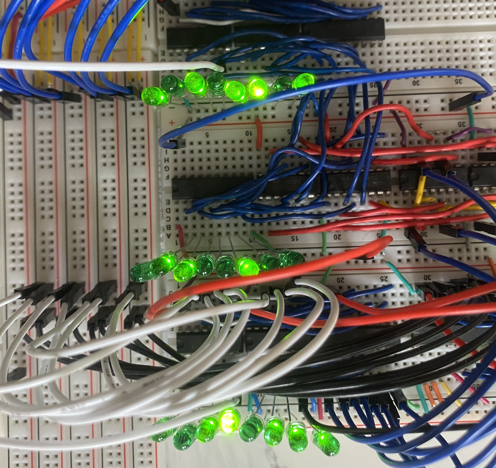

8-Bit Breadboard Computer
Overview
This project builds an 8-bit computer entirely on a breadboard to illustrate fundamental CPU operations.
Currently, registers, ALU and the clock module are fully implemented, and work on the RAM unit is in progress.
The control unit will follow once memory is operational.
Project Status: Ongoing
Registers
Three 8-bit registers: one for instruction storage and two for intermediate values.
Each register can load, hold, and output data onto the system bus under clock control.
A register
Value: 10101101 or 173
B register
Value: 10110111 or 183
Instruction register
Value: 00110101 or 53
ALU (Arithmetic Logic Unit)
The ALU executes 8-bit arithmetic operations—currently supporting addition and subtraction.
Its result is driven onto the system bus and it sets status flags to indicate zero or carry conditions.
ALU output
Value: 01100100 or 100

When two 8-bit values are added and the true sum exceeds 255, the ALU only drives the lower 8 bits onto the bus—effectively subtracting
256 from the real result—and raises the carry flag. For example, adding 173 and 183 should give 356, but because 356 – 256 = 100,
the ALU output is 100 and the carry bit is set.
Clock
The clock generator, built around a 555 timer, produces a stable square wave to synchronize all modules. A central switch toggles between continuous operation—where an adjustable potentiometer sets the pulse frequency—and manual stepping mode, which uses the 555 timer in a debounced push-button circuit to generate one clock pulse at a time.
RAM Unit
The RAM unit is under development. It will provide read/write memory for program instructions and data.